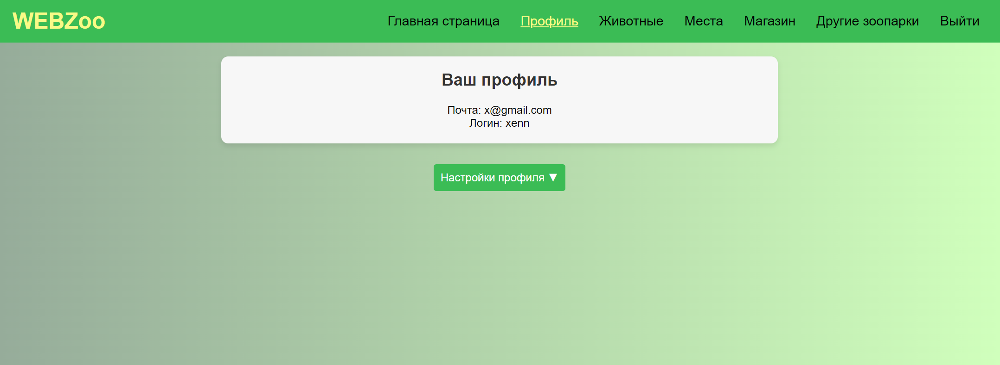
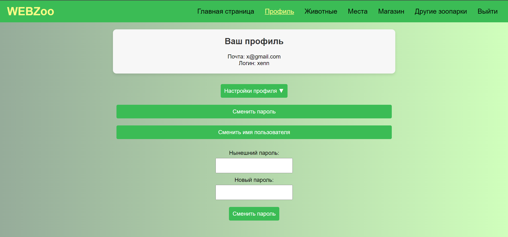
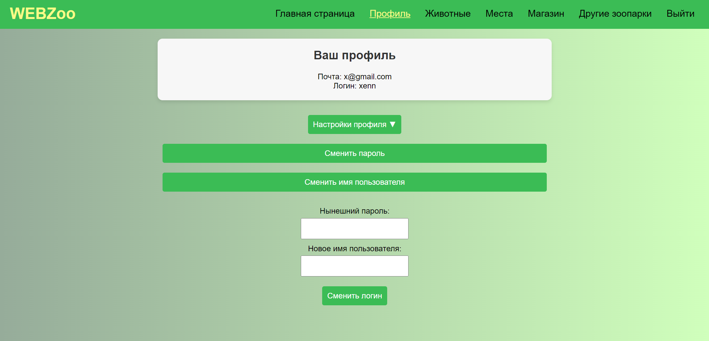
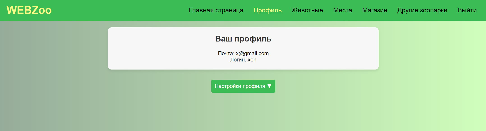

Профиль
Страница профиля пользователя состоит из доступных для просмотра данных - логина и почты, заполненной при регистрации - а также имеет в себе опции смены логина и пароля в раскрывающемся списке.

Так выглядит профиль без раскрытого списка
Смена логина и пароля представляет собой две кнопки в выпадающем списке.
Смена пароля
 Смена пароля
Смена логина
 Смена логина
При успешной смене страница перезагружается, а в случае смены логина изменения на странице отображаются незамедлительно. 